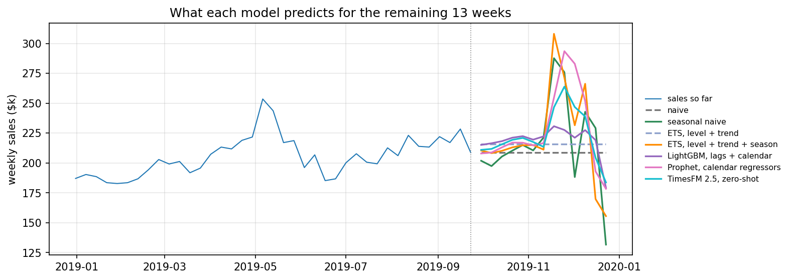

5.3 Sales Forecasting and Scenario Planning
Will we hit the sales target?
That sounds like one question, but a planning team needs three answers:
- Where will sales land if the current plan continues?
- How likely are we to reach the target?
- Which measured actions could change those odds, and by how much?
It is late September. The company plans in 52-week fiscal years that close in late December, and 39 of those weeks are already behind us. Thirteen weeks remain, including the Black Friday to Christmas stretch, when this business does a disproportionate share of its year.
| Target and sales status | Value |
|---|---|
| Sales so far (39 weeks) | $8.02M |
| Year to date vs. last year | +7.3% |
| Weeks remaining | 13 |
| Last year’s result | $10.30M |
| Annual target | $11.12M |
| Target vs. last year | +8.0% |
Sales are growing at +7.3%, but the target asks for +8.0%. Close, but is it close enough? Before answering, three terms need definitions, because the whole chapter hangs on the distinction between them. The target is a fixed threshold chosen by the business. The baseline is a forecast of the remaining weeks if the current plan simply continues, business as usual, with the recurring promotions, prices, and media that shaped the history still in place. The increment is what an additional marketing action adds on top of that baseline, and it comes from the causal methods elsewhere in this book, never from the forecast itself. For a scenario \(s\), the year-end outcome is
\[ Y^{(s)}_{\text{year-end}} = Y_{\text{so far}} + R_{\text{baseline}} + \Delta_s \]
sales so far, plus the baseline forecast of the remaining weeks, plus the increment the scenario causes.

The series is author-generated: six 52-week fiscal years of weekly e-commerce revenue on the real 2014 to 2019 calendar, with holiday peaks that vary in strength from year to year and a campaign effect whose true size is known.
Companion notebook: sec5.3_sales_forecasting.ipynb reproduces every number and figure in this chapter (the two concept diagrams come from regenerate_sec5_3_figures.py).
View on GitHub
Building the Baseline Forecast
With sales up 7.3% year over year, it is tempting to project that growth rate onto last year’s total and call it a forecast. That shortcut works only if the trend continues and the last quarter looks like last year’s, and the holiday quarter is where both assumptions break down: the peak is big, and its size varies from year to year. The quarter does not end on the peak either. Once the shipping cutoff passes, the Christmas week itself falls hard, and it lands in fiscal week 51 some years and week 52 in others.

So we need a model for the remaining weeks. Two rules set the floor, and any model has to clear it.
- Naive. Repeat the last observed week. Structurally blind to the season about to start.
- Seasonal naive. Repeat the same fiscal week of last year. The honest version of “apply last year’s pattern”.
Four candidates then compete on exactly the same historical decisions, the first of them in two versions.
- ETS (exponential smoothing). Level, trend, and seasonality as explicit components, in two versions, with and without the 52-week seasonal term.
- Prophet. A changing trend, a yearly season, and calendar effects, fitted as separate additive pieces. The tool many analysts open first, which earns it a place in the comparison and nothing more.
- LightGBM on lag features, with the fiscal week and the holiday and promotion calendar as inputs. It enters as a fixed, lightly regularized comparator, not a tuned production model.
- TimesFM 2.5. A pretrained foundation model, used zero-shot: no fitting, and nothing but the sales history.

from statsmodels.tsa.exponential_smoothing.ets import ETSModel
def fit_ets(train, seasonal=None):
model = ETSModel(
pd.Series(np.log(train)),
error="add", trend="add", damped_trend=True,
seasonal=seasonal, seasonal_periods=52 if seasonal else None,
)
return model.fit(disp=False)The seven paths disagree by a wide margin over the peak, and nothing in the chart says which one to believe. A more complex model only adds value if it clearly outperforms the naive benchmarks. In practice, that bar is higher than many expect. Whichever candidate wins the backtest becomes the baseline; being popular or being recent does not qualify a model.
Two caveats before the results. Prophet and LightGBM get the holiday and promotion calendar, which is known in advance; TimesFM gets only the sales history, because forecasting a bare series is the claim a foundation model actually makes. And this series is synthetic, built on a 52-week cycle, the shape a seasonal ETS is designed to fit. Read the table as one honest comparison on one series, not a ranking of methods.
Which Library?
| Method | Library | Best when | Watch out |
|---|---|---|---|
| Seasonal naive | numpy, or statsforecast |
Always, as the floor to beat | Cannot update the level |
| ETS | statsmodels (used here), statsforecast |
One series, a few hundred rows | Needs two full seasonal cycles |
| ARIMA | statsmodels, statsforecast |
Autocorrelation, exogenous regressors | A 52-week season fits slowly |
| Prophet | prophet (used here) |
Daily data, holiday calendars | Intervals omit seasonality uncertainty |
| Gradient boosting | lightgbm + mlforecast (used here) |
Many series, rich features | Needs far more rows than one series gives |
| Foundation models | timesfm (used here), chronos |
No history to fit on, or many unrelated series | Large downloads; the newest weights are often non-commercial |
One series with a few hundred weekly rows is the common planning case, and a seasonal state-space model plus the naive benchmarks usually covers it. Gradient boosting earns its place with many series and rich features. Foundation models are worth knowing because they need no fitting at all, which is genuinely useful for a new SKU with no history; note the licence, though, since this chapter uses the TimesFM 2.5 weights precisely because the newer 3.0 weights are restricted to non-commercial use. Whichever library you use, the comparison in the next section is the part that decides.
Validating the Baseline with a Rolling-Origin Backtest
The usual approach is a random train/test split. On this data, that gives LightGBM a WAPE of 4.5%. But that number is misleading for two reasons. First, shuffling lets the model train on weeks that come after the ones it predicts, and with lagged features most test rows have adjacent weeks in the training set. Second, a random split scores one-row-at-a-time interpolation: it cannot even produce the object the decision needs, a 13-week path from a fixed origin. Whatever it reports answers a different question.
The key rule, often broken in practice, is that every model should use only the information available at the forecast origin. Every historical forecast used for evaluation must follow the same rule.
A rolling-origin backtest enforces it, and the fiscal calendar makes it unusually clean here. Every year has the same 52-week shape, so the exact decision we face now, forecast year-end from late September, can be replayed at the same point of FY2016, FY2017, and FY2018 (FY2015 has too little history behind it to estimate a 52-week season). That gives three honest replicas of the question.

HORIZON = 13
SEPT_ORIGINS = [143, 195, 247] # end of fiscal week 39, FY2016..FY2018
for origin in SEPT_ORIGINS:
train = y[:origin] # nothing after the origin, for any model
actual = y[origin:origin + HORIZON]
for name, forecast in fit_all_models(train, HORIZON).items():
score(name, origin, actual, forecast)Two point metrics are enough to compare the models. Weekly WAPE, \(\sum_t |y_t - \hat y_t| / \sum_t |y_t|\), is the error a planner recognizes. The year-end question depends on the signed error of the 13-week total, because weekly misses partly cancel inside a quarter’s sum.
| Model | Weekly WAPE | 13-week total error | Bias |
|---|---|---|---|
| Naive | 13.2% | 6.8% | -6.8% |
| Seasonal naive | 8.6% | 5.5% | -5.5% |
| ETS, level + trend | 13.3% | 4.7% | -4.7% |
| ETS, level + trend + season | 7.4% | 2.6% | -1.3% |
| LightGBM, lags + calendar | 12.3% | 5.7% | -5.7% |
| Prophet, calendar regressors | 10.5% | 5.3% | +1.8% |
| TimesFM 2.5, zero-shot | 10.8% | 2.6% | -1.5% |
Seasonality drives the quarter, and the seasonal ETS wins both columns. Three of the losses are worth reading, though.
TimesFM is the surprise. Given nothing but the raw series, it matches the seasonal ETS on the 13-week total, the column the year-end question depends on, while sitting 3.4 points behind week by week. No fitting, no promotion calendar, and still competitive on the quarter.
Prophet is the letdown, and it is the one many teams would have shipped. At 5.3% on the total it barely improves on repeating last year’s pattern, because its yearly season is a 365.25-day cycle while this business plans in fixed 52-week years, so the peak it fits drifts against the peak that matters. LightGBM cannot compete on a single series with a few hundred rows; its rolling-origin WAPE of 12.3% against 4.5% from the random split is the leakage lesson, measured.
The seasonal ETS is the baseline from here on. It wins the comparison, and it is the only candidate that produces complete forecast paths rather than one number per week, which is what the next step needs.
The Probability of Hitting the Target
Now the live version of the machinery the backtest just validated. Fit the seasonal ETS on everything up to late September, simulate 5,000 complete 13-week paths, and add each path’s total to the $8.02M of sales so far.
result = fit_ets(y[:LIVE_ORIGIN], seasonal="add")
paths = simulate_paths(result, h=13, repetitions=5000) # centered residual bootstrap
year_end = sales_so_far + paths.sum(axis=0) # one total per path
p10, p50, p90 = np.percentile(year_end, [10, 50, 90])
p_hit = (year_end >= target).mean()
The median year-end forecast is $10.91M, with an 80% interval from $10.79M to $11.05M. The median is what usually appears in presentations, but it is not a commitment. Treating it as one ignores the uncertainty that matters for planning. The $11.12M target sits just above the P90, so the chance of reaching it under the current plan is 4%. That is not impossible, but it is clearly unlikely, and now the team has a number for how unlikely.
Checking Interval Calibration
The 4% was read off a simulated distribution, so that distribution deserves a check of its own, on the quantity we decide on: the 13-week total. Weekly forecast errors are correlated over the horizon and quantiles do not add, so the interval on the total cannot be built by stacking the model’s weekly quantiles. That is why the code simulates complete paths and sums each one.
The check replays the same procedure at past origins and asks whether the realized total fell inside the 80% band. Across 15 non-overlapping 13-week windows, it did so 12 times, close to the nominal 80%; the three September replicas covered 2 of 3.

The coverage supports the spread, but not the tail: the target sits beyond the P90, where 15 windows cannot certify a number as small as 4%. Trust the shape of the answer, low single digits, and plan against “clearly unlikely” rather than 4.0%.
Marketing Scenarios Need Measured Increments
The baseline distribution now tells us where the current plan is likely to land. The next question every meeting asks: would an additional campaign change the answer?
Last year’s holiday promotion weeks ran about 22% above the surrounding weeks, so it is tempting to pencil in +22% for an extra campaign. That number is wrong three times over. Promotions are timed for the strongest weeks, so part of the 22% is seasonality. The baseline already carries the average effect of recurring promotions, so most of the rest is baked in. Whatever remains is a mix of the promotion and everything else the model missed. A promotion variable can help a forecast, but its coefficient is not a causal effect: forecasting says what is likely to happen, not what happened because of marketing.
So \(\Delta_s\) comes from outside the forecast. Before an increment can enter the simulation, it needs two things: a reference condition, meaning what it is an increment over, and an uncertainty distribution.
| Scenario | Increment | Where the number comes from |
|---|---|---|
| Current plan (baseline) | 0 | the baseline forecast |
| Additional holiday campaign | +8% on the four campaign weeks (SE 2.5 points) | a geo experiment (Section 6.3) or a causal impact analysis (Section 3.4) on last year’s campaign |
| Additional media investment | +$60k over the quarter (SE $25k) | a calibrated MMM response curve (Section 6.2, Section 6.4) |
These increments are placeholders shaped like real measurements. Fill each row from the relevant chapter, or leave it out; a Bayesian source such as a calibrated MMM can supply posterior draws directly.
Comparing Scenario Distributions
Units matter when an increment enters the simulation. The campaign effect is relative: it multiplies each path’s own campaign-week sales, so a strong holiday season earns a proportionally larger dollar lift. The media effect arrives in dollars and is added directly.
beta = rng.normal(0.08, 0.025, size=n_paths) # campaign lift per path
campaign_base = paths[CAMPAIGN_STEPS, :].sum(axis=0)
year_end_campaign = sales_so_far + paths.sum(axis=0) + beta * campaign_base
media = rng.normal(60_000, 25_000, size=n_paths) # dollars over the quarter
year_end_media = sales_so_far + paths.sum(axis=0) + media| Scenario | P10 | P50 | P90 | P(hit target) | Reading |
|---|---|---|---|---|---|
| Current plan (baseline) | $10.79M | $10.91M | $11.05M | 4% | Unlikely |
| Additional holiday campaign | $10.87M | $11.00M | $11.14M | 13% | Better odds, still unlikely |
| Additional media investment | $10.85M | $10.97M | $11.11M | 8% | Helps, not enough alone |

The campaign moves the median from $10.91M to $11.00M and the probability of hitting the target from 4% to 13%. Two things people will say in the meeting are both wrong. “The target is impossible”: no, the campaign scenario puts it inside the band. “The campaign makes the target likely”: no, 13% is not likely. The table holds both facts at once, which a point forecast never could.
Working Backward from the Target
The same simulation answers the reverse question: how much would the quarter have to beat the baseline median, and has anything like that ever happened?
| Comparison | Uplift over the baseline quarter |
|---|---|
| Required to reach the target | +7.2% |
| Largest September upside miss | +6.0% |
| Campaign increment (median) | +3.0% |
| Media increment (median) | +2.1% |
Hitting the target requires beating the median forecast by 7.2%. Do not confuse that with the 7.3% year-to-date growth, which is measured against last year, not against the model. None of the three September replicas beat the median by that much; the largest upside was 6.0%. The only bigger miss among the 15 non-overlapping validation windows was +11.9%, the rebound after the mid-2016 two-week slump, a one-off shock, not a plan. Even both increments together add about 5%, still short.
From Forecast to Decision
The three questions from the opening now have numbers. Around $10.91M under the current plan. A 4% chance of the target. The measured actions lift that to 13% at best, and even together they leave a gap of a few points of the quarter. No scenario makes the target likely, but the gap is now a number the team can plan around, in September rather than as a January surprise.
Keep each tool pointed at its own term of the equation. The baseline says what is likely if the current plan continues; it cannot say what a campaign will cause. That is \(\Delta_s\), and it takes causal evidence: an experiment (Section 3.2), a geo test (Section 6.3), a calibrated MMM (Section 6.4), an elasticity curve (Section 5.1), or a causal impact analysis (Section 3.4). The reverse holds too: a rigorous lift estimate cannot produce next quarter’s total.
One more use for the forecast band after the meeting ends: a week that lands outside it is a signal to investigate, not proof that the business changed.
Key Takeaways
- Validate the baseline on the horizon and at the calendar point the decision uses, with only the information available at each origin. A random split answers a different question.
- Decide from a distribution, not a point: simulating complete 13-week paths is what turns “$10.91M” into “a 4% chance”. Read the 4% as low single digits, not a precise frequency; a central-interval check cannot certify a tail that far out.
- A scenario is the baseline plus a separately measured increment, each with a reference condition and an uncertainty. Promotion-week sales are not an increment, and a forecast never measures what marketing caused.